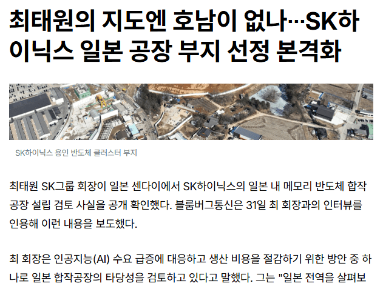

호남은 언급도 안하고
일본은 부지까지 선정 완료 단계 ㅋㅋㅋ
후쿠시마 바로 옆인데 괜찮나?
링크 https://www.leadeconomy.co.kr/news/articleView.html?idxno=9462

호남은 언급도 안하고
일본은 부지까지 선정 완료 단계 ㅋㅋㅋ
후쿠시마 바로 옆인데 괜찮나?
링크 https://www.leadeconomy.co.kr/news/articleView.html?idxno=9462
반도체는 지진영향 없나?
지진에 영향없는 산업군은 없음
애초에 HBM을 TSMC안테 주고 패키징 한다고 함, 근데 TSMC 공장 일본에 있긴 함
제목 이거 니가 정한거면 넌 연예쪽 기레기랑 동급이다.
왜일본? 호남 좆같긴하지만 그래도 지방발전은 필요한데 이새끼 내성격 까먹었나보네 하면서 정부가 몽둥이들어야
몽둥이 드니까 저기로간다는거지ㅋㅋ
아주 호구로 보고 빨대꼽고 이용해먹으려 하니까 해외로 도망가는거 아냐 ㅋㅋㅋ
그렇게 몽둥이 들어서 일본으로 튄기업 많다
넥슨도 여가부에서 매출대비 세금내라고 개 지랄해서 ㅌㅌ 함
근데 결국 일본 갔다가 다시 ㅌㅌ 한 경우도 있지않나?
일본에 기업 뺏긴 나라 몇 있지 않나 ㅋㅋㅋ
카를로스곤은 울고있다..!
우리나라 NHN 라인 뺏겼음
호남은물이없다매 근데 일본은뜬금없군
ㄴㄴ 히로시마랑 저기랑 계속 고민중이고 일본은 계속 러브콜 날림
라인 지진 거리는 애들은 뭐냐 하닉이 빡통도 아니고 어련히 알아서 하겠지
그럼 지금 네이버가 개빡통이라서 빼았겼단말이냐!!!
네이버는 소뱅이랑 캐삭빵 걸고 싸우다 진거로 봐야지
방구석 개백수도 국정운영과 대기업경영을 훈수 두는 게 인터넷인데 그러려니 해라ㅋㅋㅋㅋ
합작은 먼놈의 합작
호남에 1000조내고 짓겠냐고ㅋㅋ
저긴 세제혜택 현금성지원 존나줄텐데
호남에 짓자고 첫삽 뜬 순간부터 공장 문 닫을때까지 주구장창 지랄할놈들이 줄을 서있을테니 그런 꼴 보기싫어서라도 일본가고싶을듯
호남보단 일본이낫다ㅋㅋ
지진 일어나는 일본인데?
한두푼하는 동네 장사도 아니고 초엘리트들이 계산기 두드려봤을 테니 우리보단 잘 알겄지 뭐
그러긴 하겠지
기본적으로 일본 공장에 대한 리스크라고 하면 이번 구마모토 tsmc처럼 생산중지와 라인셋업 초기화랑 정직원 장기채용에 대한 부담감 정도?
하지만 일본진출의 매리트는 정부의 지원과 한국의 절반 수준인 전문직 인건비, 퇴직금이 의무가 아닌점, 소부장들을 일본에서 바로 납품받을 수 있다는거 정도?
아 소부장을 바로 납품받을수있는게 생각보다 엄청큰 메리트네
후쿠시마 바로 옆이라서 되는거일듯 반도체는 기본적으로 오염이 심함 화학물질도 많이 쓰고 그 중에 발암물질도 많고
후처리도 제대로 해야함 후쿠시마처럼 물 많고 근거리에 사람도 좀 있는데 이미 버린 땅이어야 사업성이 성립하긴 할듯
클리앙쪽 반응이 궁금해서 봤더니 생각보다 현실적이어서 흥미롭네
되려 여기가 예전 클리앙 보는것같다
그래도 그짝은 IT 빠꼼이 들이니까 현실적인 조건들은 어느정도 알겠지
일본에 잘못 투자하면 나라에 뺏긴다 뭐다 말이 많던데
호남 사람이지만 호남에 왜 오나 싶었는데
사업성 따진글 보니까 호남이 너무 안 맞던데
하닉에 좋은데 가서 메모리 많이 만들어야된다~
일본은 진짜 아닌데 라인 보고도 저러나
루먼가..호남은 그렇다 치고 국내 다른 후보지도 없어?
정권이랑 유착된 온갖 단체 숟가락 들고 몰려와서 깽판칠 텐데 호남은 쉽지 않을 듯
일본은 좀 그렇긴한데 그래도 호남보단 나아
그짝은 안된다는거겠지
전라도에 지으면 뻑하면 파업에 시위인데 걍 정권바뀔때까지 한다고 쇼하고 정권바뀌면 입싹닫을거 모르는사람잇엇나
289층 주주로서 호남보다는 일본이 좋다는 생각이에요
호남 그 시위대들의 진짜 목적은 오히려 거기에 못 들어오게 하는 거였을껄
구호와 반대라서 사람들이 많이 햇갈려할듯
걔네도 바보가 아니라 진짜 들어오게 하려면 지네들 그림자도 보이면 안된다는거 알고있음
근데 그 난리를 핀건 못 들어오게 하려는 거
호남은 정치적 양식장인데 거기에 고액임금으로 돈 뿌릴 외부 변수가 생기는걸 원치 않는거
-stay hungry forever-
호남도 지팔지꼰이지뭐
공기중에 떠다니는 우라늄으로 합성해서 발전하기